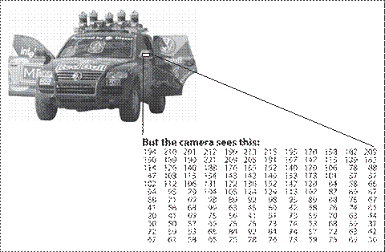
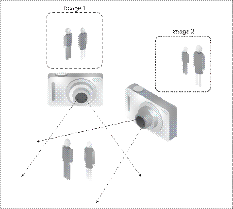
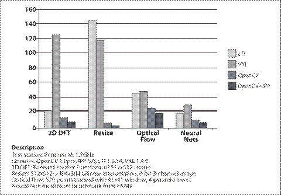
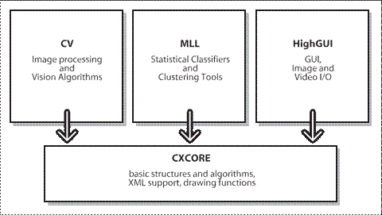
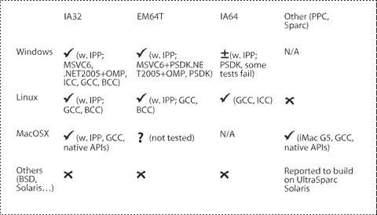

OpenCV视觉编程
图像处理、计算机视觉和OpenCV的理解
什么是图像处理？
通俗来说就是对图像进行处理。专业点来说，图像处理主要指使用计算机对目标图像进行处理，达到预期的效果的一种技术。图像处理主要包括三个部分：图像的压缩，图像的增强和复原以及图像的描述、识别、匹配。
什么是计算机视觉？
通俗来说就是研究如何使得计算机能够像人类一样拥有一个敏锐的视觉，甚至超过人眼的功能。维普百科上的解释是：计算机视觉是一门研究如何使机器“看”的科学，更进一步的说，就是指用摄影机和计算机代替人眼对目标进行识别、跟踪和测量等机器视觉，并进一步做图像处理，用计算机处理成为更适合人眼观察或传送给仪器检测的图像。
计算机视觉的一个目标就是能够使得计算机能够模拟人类的视觉，甚至能够实现超过人类视觉功能的目的。
什么是OpenCV
OpenCV的英文全称是：Open Computer Vision Library，中文意思就是开源的计算机视觉库。顾名思义，OpenCV就是一个库函数，这些库函数主要作用就是用来研究计算机视觉。
图像处理、计算机视觉以及OpenCV它们三者之间的关系是什么？
私认为：目前来说，我们主要就是通过计算机，调用OpenCV中的库函数，对图像就行处理，不断研究计算机视觉，最终实现模拟人类的视觉。
总的来说，OpenCV是工具，图像处理的手段，计算机视觉模拟人类的视觉是最终目的。
学习书单
一波计算机视觉（OpenCV）的书。
https://xgyopen.github.io/2018/06/02/2018-06-02-cv-opencv/#目录目录
书名 |
出版日期 |
实验环境 |
简要评价 |
《学习OpenCV》 |
2009.10 |
OpenCV作者所著，经典教材 |
|
☆《OpenCV 3计算机视觉：Python语言实现（原书第2版）》 |
2016.6 |
通过Python开发基于OpenCV 3.0的应用，勘误，Github源码，第一版的Github源码，疑似第一版Github源码 |
|
《基于OpenCV的计算机视觉技术实现》 |
2008.5 |
OpenCV1.0 |
有讲解立体视觉的部分（照相机定标、三维重建） |
☆《OpenCV图像处理编程实例》 |
2016.5 |
||
《OpenCV编程案例详解》 |
2016.10 |
以实例介绍，与QT配合，有配套网易云课堂的课程，源码见QQ群 |
|
《OpenCV和Visual Studio图像识别应用开发》 |
2017.10 |
VS2013、OpenCV2.4.10 |
分模块介绍 |
《OpenCV图像处理》 |
2016.3 |
Qt |
|
《OpenCV计算机视觉编程攻略：第2版》 |
2015.9 |
||
《深入理解OpenCV：实用计算机视觉项目解析》 |
2014.9 |
高级应用，涉及Android、iOS Mastering OpenCV with Practical Computer Vision Projects源码 |
|
《OpenCV项目开发实战》 |
2016.9 |
OpenCV 4 |
高级应用，涉及Unity |
☆《OpenCV3编程入门》 |
2015.2 |
||
《OpenCV实例精解》 |
2016.8 |
||
《数字图像处理基础及OpenCV实现》 |
2014.12 |
VS2015、OpenCV1.0 |
教科书，拼凑冲职称作品，可能仅有代码有参考作用 |
计算机视觉
《计算机视觉——算法与应用》（工具书） PDF
《数字图像处理》冈萨雷斯 PDF
《图像处理、分析与机器视觉》（第4版）PDF
《计算机视觉模型、学习和推理》 PDF
《Multiple view geometry in computer vision》 PDF
《视觉SLAM十四讲 从理论到实践》
《基于机器学习的物体自动理解技术》
《Python计算机视觉编程 [美]》 PDF
https://xgyopen.github.io/2018/06/02/2018-06-02-cv-opencv/#《OpenCV-3计算机视觉：Python语言实现（原书第2版）》《OpenCV 3计算机视觉：Python语言实现（原书第2版）》
OpenCV概述
什么是OpenCV
OpenCV是一个开源(参见http://opensource.org)的计算机视觉库，项目主页为http://SourceForge.net/projects/opencvlibrary。OpenCV采用C/C++语言编写，可以运行在Linux/Windows/Mac等操作系统上。OpenCV还提供了Python、Ruby、MATLAB以及其他语言的接口。
OpenCV的设计目标是执行速度尽量快，主要关注实时应用。它采用优化的C代码编写，能够充分利用多核处理器的优势。如果是希望在Intel平台上得到更快的处理速度，可以购买Intel的高性能多媒体函数库IPP(IntegratedPerformancePrimitives)。IPP库包含许多从底层优化的函数，这些函数涵盖多个应用领域。如果系统已经安装了IPP库，OpenCV会在运行时自动使用相应的IPP库。
OpenCV的一个目标是构建一个简单易用的计算机视觉框架，以帮助开发人员更便捷地设计更复杂的计算机视觉相关应用程序。OpenCV包含的函数有500多个，覆盖了计算机视觉的许多应用领域，如工厂产品检测、医学成像、信息安全、用户界面、摄像机标定、立体视觉和机器人等。因为计算机视觉和机器学习密切相关，所以OpenCV还提供了MLL(MachineLearningLibrary)机器学习库。该机器学习库侧重于统计方面的模式识别和聚类(clustering)。MLL除了用在视觉相关的任务中，还可以方便地应用于其他的机器学习场合。
OpenCV学习之路
OpenCV好处是把图像处理很多底层基础功能打包，使用户可以专注于更高层的逻辑、业务算法方面了。所以对于没有图像学基础的用户是个福音。虽然深度学习在计算机视觉方向很火，但你要清楚你是要从深度学习入门还是从opencv入门，如果你本来就想学深度学习，那你应该去学一下pytorch后者TF等深度学习框架，然后再涉猎一下opencv就够了，但如果你就是要学习opencv计算机视觉，那你就可以参看以下建议了。
OpenCV只是一个库。图像识别，手势识别，图像处理，二维码处理，深度学习，姿势识别等等都可能用到。
对于opencv库函数API参数介绍的很到位，看完可以完美的成为调API侠。所以缺点也明显啦，它对于一些算法讲解的很不透彻，你学完根本不可能知道算法原理。你要是熟练应用这个库，基本上可以把40%的人踩在脚下。
进一步磨练你对API的应用熟练度以及对算法本身进一步了解。建议题主找找OpenCV实现的开源代码尝试读一读，或者CSDN上弄些简单的OpenCV实现的车牌识别工程。如果你可以理解OpenCV的代码，并且重写优化代码，甚至应用到其他库中去，那么超过60%的人是没问题的。
如果你可以用OpenCV或者编程语言实现一些论文中的算法，或者理解gayhub上面大型项目，那么你就超过80%的人了。
再接下去就是大神了，到这一步可能需要5-10年，慢慢努力吧
OpenCV的应用领域
大多数计算机科学家和程序员已经意识到计算机视觉的重要作用。但是很少有人知道计算机视觉的所有应用。例如，大多数人或多或少地知道计算机视觉可用在监控方面，也知道视觉被越来越多地用在网络图像和视频方面。少数人也了解计算机视觉在游戏界面方面的应用。但是很少有人了解大多数航空和街道地图图像(如Google的StreetView)也大量使用计算机定标和图像拼接技术。一些人知道安全监控、无人飞行器或生物医学分析等方面的应用，但是很少人知道机器视觉是多么广泛地被用在工厂中：差不多所有的大规模制造的产品都在流水线上的某个环节上自动使用视觉检测。【1～2】
OpenCV所有的开放源代码协议允许你使用OpenCV的全部代码或者OpenCV的部分代码生成商业产品。使用了OpenCV后，你不必对公众开放自己的源代码或改善后的算法，虽然我们非常希望你能够开放源代码。许多公司(IBM，Microsoft，Intel，SONY，Siemens和Google等其他公司)和研究单位(例如斯坦福大学、MIT、CMU、剑桥大学和INRIA)中的人都广泛使用OpenCV，其部分原因是OpenCV采用了这个宽松的协议。Yahoogroups里有一个OpenCV论坛(http://groups.yahoo.com/group/OpenCV)，用户可以在此发帖提问和讨论；该论坛大约有20000个会员。OpenCV在全世界广受欢迎，在中国、日本、俄罗斯、欧洲和以色列都有庞大的用户群。
自从OpenCV在1999年1月发布alpha版本开始，它就被广泛用在许多应用领域、产品和研究成果中。相关应用包括卫星地图和电子地图的拼接，扫描图像的对齐，医学图像去噪(消噪或滤波)，图像中的物体分析，安全和入侵检测系统，自动监视和安全系统，制造业中的产品质量检测系统，摄像机标定，军事应用，无人飞行器，无人汽车和无人水下机器人。将视觉识别技术用在声谱图上，OpenCV可以进行声音和音乐识别。在斯坦福大学的Stanley机器人项目中，OpenCV是其视觉系统的关键部分。Stanley在DARPA机器人沙漠挑战赛中，赢得了二百万美元奖金[Thrun06]。
什么是计算机视觉
什么是计算机视觉
计算机视觉是将来自静止图像或视频的数据转换成一个决策或者一种新的表达方式的过程，所有的这些转换都是为了达到某个目标。输入数据可以包含一些辅助信息，如"摄像机架在汽车上"或"激光扫描仪在1米处发现一个物体"。最终的决策可能是"场景中有一个人"或"在这个切片中有14个肿瘤细胞"。一种新的表达方式可以是将一张彩色照片转为灰度照片，或者从图像序列中去除摄像机晃动影响。
因为人类是视觉动物，所以会误以为可以很容易地实现计算机视觉。当你凝视图像时，从中找到一辆汽车会很困难么？你凭直觉会觉得很容易。人脑将视觉信号划分入很多个通道，将各种不同的信息输入你的大脑。你的大脑有一个关注系统，会根据任务识别出图像的重要部分，并做重点分析，而其他部分则分析得较少。在人类视觉流中存在大量的反馈，但是目前我们对之了解甚少。肌肉控制的传感器以及其他所有传感器的输入信息之间存在广泛的关联，这使得大脑可以依赖从出生以来所学到的信息。大脑中的反馈在信息处理的各个阶段都存在，在传感器硬件(眼睛)中也存在。在眼睛中通过反馈来调节通过瞳孔的进光量，以及调节视网膜表面上的接收单元。【2～3】
在计算机视觉系统中，计算机接接收到的是来自摄像机或者磁盘文件的一个数值矩阵。一般来说，没有内置的模式识别系统，没有自动控制的对焦和光圈，没有多年来经验的积累。视觉系统通常很低级。图1-1显示了一辆汽车的图像。在此图中，我们可以看到车的一侧有一个反光镜，而计算机"看"到的只是一个数值的矩阵。矩阵中的每个数值都有很大的噪声成分，所以它仅仅给出很少的信息，这个数值矩阵就是计算机"看"到的全部。我们的任务是将这个具有噪声成分的数值矩阵变成感知："反光镜"。图1-2形象地解释了为什么计算机视觉如此之难。
|  |
图1-1：对一个计算机来说，汽车的反光镜只是一个数值矩阵 |
|  |
图1-2：视觉问题的病态本质：随着视点的变化，物体的二维外观会变化很大 |
实际上，计算机视觉问题比前面我们提到的更糟糕，它是不可解的。给出三维世界的二维视图，是没有固定方法来重建出三维信息的。在理论上，此类病态问题没有惟一和确定的解。即使数据很***，同一张二维图像也可以表示多种三维场景。然而，如前面提到的，数据会被噪声和形变影响。这些影响来自真实世界的变化(天气、光线、反射、运动)，镜头和机械结构的不***，传感器上的长时间感应(运动模糊)，传感器上和其他电子器件上的电子噪声，以及图像采集后的图像压缩引入的变化。有如此多令人头疼的问题，我们如何取得进展？ 【3～4】
设计实际系统时，为了克服视觉传感器的限制，通常会使用一些其他的上下文知识。考虑这样一个例子，移动机器人在室内寻找并捡起订书机。机器人可以利用这个先验知识：可在办公室内发现桌子，订书机最可能在桌子上被找到。这给出了一个隐含的尺寸参考或参照，也就是订书机能够放在桌子上。这也可以用于消除在不可能的地方(例如在天花板或者窗户上)错误识别出订书机的可能性。机器人也完全可以忽略一个200英尺大小的跟订书机形状类似的广告飞艇，因为飞艇周围没有桌子的木纹背景。与之相反，在图像检索中，数据库中的所有订书机图像都是对真正的订书机拍摄的，而且尺寸很大和形状不规划的订书机图像一般不可能被拍到。也就是拍摄者一般只拍摄真正的、普通大小的订书机图像。而且人们拍照时一般会将被拍物体置于中心，且将物体放在最能表现其特征的方向上。因此在由人拍摄的图像中，具有相当多的隐含信息。 【4～5】
我们也可以使用机器学习技术对上下文信息进行显式建模。隐含的变量(例如物体大小、重力方向及其他变量)都可以通过标记好的训练数据里的数值来校正。或者，也可以通过其他的传感器来测量隐含的变量。使用激光扫描仪可以精确测量出一个物体的大小。计算机视觉面临的另一个难题是噪声问题。我们一般使用统计的方法来克服噪声。例如，一般来说不可能通过比较一个点和它紧密相邻的点来检测图像里的边缘。但是如果观察一个局部区域的统计特征，边缘检测会变得容易些。由局部区域卷积的响应连成的点串，构成边缘。另外可以通过时间维度上的统计来抑制噪声。还有一些其他的技术，可以从数据中学习显式模型，来解决噪声和畸变问题。例如镜头畸变，可以通过学习一个简单多项式模型的参数来描述这种畸变，然后可以几乎完全校正这种畸变。
计算机视觉拟根据摄像机数据来采取行动或者做出决策，这样的行动或决策是在一个指特定目的或任务的环境中来解决。我们从图像去除噪声和损坏区域，可以让监控系统在有人爬过栅栏时给出报警，或者在一个游乐园里监控系统能够数出总共有多少人通过了某个区域。在办公室巡游的机器人的视觉软件所采用的方法与固定摄像机的不同，因为这两个系统有不同的应用环境和目标。通用的规律是：对计算机视觉应用环境的约束越多，则越能够使用这些约束来简化问题，从而使最终的解决方案越可靠。
OpenCV的目标是为解决计算机视觉问题提供基本工具。在有些情况下，它提供的高层函数可以高效地解决计算机视觉中的一些很复杂的问题。当没有高层函数时，它提供的基本函数足够为大多数计算机视觉问题创建一个完整的解决方案。对于后者，有几个经过检验且可靠的使用OpenCV的方法；所有这些方法都是首先大量使用OpenCV函数来解决问题。一旦设计出解决方案的***个版本，便会了解它的不足，然后可以使用自己的代码和知识来解决(更为广知的一点是"解决实际遇到的问题，而不是你想像出来的问题")。你可以使用***个版本的解决方案作为一个基准，用之评价解决方案的改进程度。解决方案所存在的不足可以通过系统所用的环境限制来解决。
OpenCV的起源
OpenCV诞生于Intel研究中心，其目的是为了促进CPU密集型应用。为了达到这一目的，Intel启动了多个项目，包括实时光线追踪和三维显示墙。一个在Intel工作的OpenCV作者在访问一些大学时，注意到许多顶尖大学中的研究组(如MIT媒体实验室)拥有很好的内部使用的开放计算机视觉库—— (在学生们之间互相传播的代码)，这会帮助一个新生从高的起点开始他/她的计算机视觉研究。这样一个新生可以在以前的基础上继续开始研究，而不用从底层写基本函数。
因此，OpenCV的目的是开发一个普遍可用的计算机视觉库。在Intel的性能库团队的帮助下 [3]，OpenCV实现了一些核心代码以及算法，并发给Intel俄罗斯的库团队。这就是OpenCV的诞生之地：在与软件性能库团队的合作下，它开始于Intel的研究中心，并在俄罗斯得到实现和优化。
俄罗斯团队的主要负责人是VadimPisarevsky，他负责管理项目、写代码并优化OpenCV的大部分代码，在OpenCV中很大一部分功劳都属于他。跟他一起，VictorEruhimov帮助开发了早期的架构，ValeryKuriakin管理俄罗斯实验室并提供了很大的支持。在开始时，OpenCV有以下三大目标。
为基本的视觉应用提供开放且优化的源代码，以促进视觉研究的发展。能有效地避免“闭门造车”。
通过提供一个通用的架构来传播视觉知识，开发者可以在这个架构上继续开展工作，所以代码应该是非常易读的且可改写。
本库采用的协议不要求商业产品继续开放代码，这使得可移植的、性能被优化的代码可以自由获取，可以促进基于视觉的商业应用的发展。
这些目标说明了OpenCV的缘起。计算机视觉应用的发展会增加对快速处理器的需求。与单独销售软件相比，促进处理器的升级会为Intel带来更多收入。这也许是为什么这个开放且免费的库出现在一家硬件生产企业中，而不是在一家软件公司中。从某种程度上说，在一家硬件公司里，在软件方面会有更多创新的空间。【6】
任何开放源代码的努力方面，达到一定的规模使项目自己能够发展是非常重要的。目前OpenCV已经有大约二百万的下载量，这个数字仍然在以平均每个月26000的下载量递增。OpenCV用户组大约有20000个会员。OpenCV吸纳了许多用户的贡献，核心开发工作已经从Intel转移到别处[4]。OpenCV过去的开发历程如图1-3所示。在发展中，OpenCV受到网络经济泡沫破裂的影响，也受到无数次管理和发展方向变化的影响。在这些变故中，OpenCV曾经有多次缺乏Intel公司人员的支持。然而，随着多核时代的到来，以及计算机视觉的更多应用的出现，OpenCV的价值开始提升。现在OpenCV在几个研究所中的开发都很活跃，所以不久应该会看到更多的功能出现，如多摄像机标定、深度信息感知、视觉与激光扫描的融合、更好的模式识别算法，同时还会支持机器人视觉的需求。关于OpenCV未来的发展，请参考第14章。
1-3:OpenCV发展路线图
OpenCV下载和安装
下载和安装OpenCV
OpenCV 项目主页在 SourceForge 网站 http://SourceForge.net/projects/ opencvlibrary， 对应的 Wiki 在http://opencv.willowgarage.com 。对于 Linux 系统，源代码发布文件为 opencv- 1.0.0 .tar.gz ；对于 Windows 系统，则为 OpenCV_1.0.exe 安装程序。然而， 最新的版本 始终都在 SourceForge 的 SVN 仓库中。
安装
下载 OpenCV 库之后，就可以安装了。 L inux 和 M ac OS 系统的安装细节可以查看 .../ opencv / 目录下的INSTALL 文本文件中的说明。 INSTALL 文件中还描述了如何编译 OpenCV 和 运行 测试程序。对于 OpenCV 开发人员，INSTALL 还列出了 所需的 autoconf 、 automake 、 libtool 和 swig 其他开发工具。 【 8 ～９】
Windows
从 SourceForge 网站下载 OpenCV 安装程序，然后运行安装程序。安装程序将安装 OpenCV ，注册 DirectShow filter ，然后进行一些安装后的处理。 现在你就可以使用 OpenCV 了。 你还可以进入目录.../opencv/_make ，使用 MSVC++ 或者 MSVC.NET 2005 打开 opencv.sln ，或者使用低版本的 MSVC++ 打开opencv.dsw ，然后生成 Debug 版的库，也可以重新生成 Release 版的库 [5] 。
如果需要使用 IPP 的优化功能，首先需要从 Intel 网站 ( http://www.intel.com/soft ware/products/ipp/index.htm) 获得 IPP 并安装；请使用 5.1 或更新的版本。请确认二进制文件路径 ( 例如 c:/program files/intel/ipp/5.1/ia32/bin) 被添加到系统环境变量 PATH 中。现在 OpenCV 就能够自动探测到 IPP ，并在运行时装载 IPP 了 ( 详细信息请参考第 3 章 ) 。
Linux
因为在 Linux 系统的各个发行版 (SuSE ， Debian ， Ubuntu 等 ) 的 GCC 和 GLIBC 版本并不一样， OpenCV 的 Linux 版本并不包含可直接使用的二进制库。 如果发行版没有提供 OpenCV ，则需要从源代码重新编译 OpenCV ，具体的细节请参考.../opencv/INSTALL 文件。
如果要编译库和演示程序，需要版本为 2.x 或更高版本的 GTK+ 及其头文件。 除此之外还要需要具有开发文件的 pkgconfig , libpng , zlib , libjpeg , libtiff 和 libjasper。同时还要安装版本为 2.3 、 2.4 或 2.5 的 Python 及其头文件 ( 开发包 ) 。同时还需要依赖 ffmpeg 0.4.9 -pre1 或更 高 的版本中libavcodec 和 libav* 系列的库， ffmpeg 的最新版可以用以下命令获取： svn checkout svn://svn.mplayerhq.hu/ffmpeg/trunk ffmpeg。
从http://ffmpeg.mplayerhq.hu/download.html 下载 ffmpeg 库 [6] ， ffmpeg 库的授权协议为 GNU 宽通用公共许可证 ( LGPL ) 。 非 GPL 软件 ( 如 OpenCV) 使用 ffmpeg 库， 需要生成和调用共享的 ffmpeg 库 ：
$> ./configure --enable-shared
$> make
$> sudo make install
编译完成后会生成以下系列库文件： /usr/local/lib/libavcodec.so.* ， /usr/local/lib/libavformat.so.*， /usr/local/lib/libavutil.so.* ，及其对应的头文件 /usr/local/include/libav*。 【９】
下载了 OpenCV 后就 可以编译 OpenCV 了 [7]：
$> ./configure
$> make
$> sudo make install
$> sudo ldconfig
安装 完成后， OpenCV 会被默认安装在以下目录： /usr/local/lib/ 和 /usr/local/include/opencv/。 因此，用户需要将 /usr/local/lib/ 添加到 /etc/ld.so.conf 文件 ( 之后需要执行 ldconfig 命令 ) ，或者将该路径添加到LD_LIBRARY_PATH 环境变量中。
同样在 Linux 平台也可以用 IPP 给 OpenCV 加速， IPP 的安装细节在前面已经提过。 我们现在假设 IPP 安装在以下路径： /opt/intel/ipp/5.1/ia32/。 修改初始化配置文件， 添加 < your install_path > /bin / 和 < your install_path> /bin/linux32 到 LD_LIBRARY_PATH 环境变量 ( 可以直接编辑 .bashrc 配置文件 ) ：
LD_LIBRARY_PATH=/opt/intel/ipp/5.1/ia32/bin:/opt/intel/ipp/5.1/ia32/bin/linux32:$LD_LIBRARY_PATH
export LD_LIBRARY_PATH
另一个方法是将 < your install_path >/ bin 和 < your install_path> /bin/linux32 添加到 /etc/ld.so.conf 文件，每个文件占一行，完成后在 root 权限下 ( 也 可以使用 sudo 命令 ) 执行ldconfig 命令。
现在 OpenCV 就可以 找到并能 使用 IPP 的共享库了，具体的细节请参考 /opencv/INSTALL 。
Mac OS X
当写此书的时候，所有的功能都可以在 Mac OS X 下使用，但是仍然有一些限制 ( 如 AVI 文件的写操作 ) ；文件 .../opencv/INSTALL中详细描述了这些限制。
在 Mac OS X 下的编译需求和编译步骤跟 Linux 下类似，但是有如下不同。
默认情况下是使用Carbon 而不是 GTK+ 。
默认情况下是使用QuickTime 而不是 ffmpeg 。
pkg-config 是非必需的 ( 它只在脚本samplels/c/build_all.sh 中用到 )
默认情况下不支持 RPM 和 ldconfig 。使用命令 configure+make+sudo make install 来编译和安装 OpenCV ；如果不是使用 ./configure --prefix=/usr 命令来配置的话，需要更新 DYLD_LIBRARY_PATH 变量。
如果要使用全部功能， 需要使用 darwinports 来安装 libpng 、 libtiff 、 libjpeg 和 libjasper ， 然后使它们能够被脚本 ./configure 检测到 ( 详细帮助请运行./ configure --help) 。对于大多数 信息 ，可以参考 OpenCV Wiki ( 网址为 http:// opencv.willowgarage.com/) 和 Mac 相关的页面 ( 网址为 http://opencv.willowgarage. com/Mac_OS_X_OpenCV_Port) 。
Q：VC6.0配置OpenCV1.0
A：Project->Settings->C/C++->Preprocessor->AddtionalIncludeddirectories：
D:\ProgramFiles(x86)\OpenCV\cv\src,D:\ProgramFiles(x86)\OpenCV\cxcore\src,D:\ProgramFiles(x86)\OpenCV\cvaux\src,D:\ProgramFiles(x86)\OpenCV\otherlibs\highgui,D:\ProgramFiles(x86)\OpenCV\otherlibs\cvcam\src\windows,D:\ProgramFiles(x86)\OpenCV\cxcore\include,D:\ProgramFiles(x86)\OpenCV\cv\include,D:\ProgramFiles(x86)\OpenCV\cvaux\include,D:\ProgramFiles(x86)\OpenCV\ml\include,D:\ProgramFiles(x86)\OpenCV\otherlibs\highgui,D:\ProgramFiles(x86)\OpenCV\otherlibs\cvcam\include,D:\ProgramFiles(x86)\OpenCV\bin
Project->Settings->Link->Input->Addtionallibrarydirectories：
D:\ProgramFiles\OpenCV\cxcore\include,D:\ProgramFiles\OpenCV\cv\include,D:\ProgramFiles\OpenCV\cvaux\include,D:\ProgramFiles\OpenCV\ml\include,D:\ProgramFiles\OpenCV\otherlibs\highgui,D:\ProgramFiles\OpenCV\otherlibs\cvcam\include,D:\ProgramFiles(x86)\OpenCV\lib
Project->Settings->/Object/librarymodules
cxcore.libcv.libml.libcvaux.libhighgui.libcvcam.lib用IPP给OpenCV加速
因为OpenCV曾由Intel性能基元(IPP)团队主持，而且几个主要开发者都与IPP团队保持着良好的关系，所以OpenCV利用了IPP高度手工优化的代码来实现加速。使用IPP获得的提速是非常显著的。图1-4比较了另外两个视觉库LTI[LTI]和VXL[VXL]与OpenCV以及IPP优化的OpenCV的性能。请注意，性能是OpenCV追求的一个关键目标；它需要实时运行代码的能力。
OpenCV使用优化了的C和C++代码实现。它对IPP不存在任何依赖。但如果安装了IPP，那么OpenCV将会通过自动载入IPP动态链接库来获取IPP的优势，来提升速度。 【6～7】

图1-4：另外两个视觉库(LTI和VXL)与OpenCV(不使用和使用IPP)的四个不同性能指标的比较：每个指标的四个柱图分别表示四个库的得分，得分与运行时间成正比；在所有指标中，OpenCV均优于其他的两个库，且用IPP优化的OpenCV优于没有使用IPP优化的OpenCV
OpenCV属于谁
虽然OpenCV项目是Intel发起的，但这个库一直致力于促进商业和研究使用。它是开放源代码且免费的，无论是商业使用还是科研使用，OpenCV的代码可用于或者嵌入(整体或部分)其他的应用程序中。它不强迫你开放或者免费发放你的源代码。它也不要求你将改进的部分提交到OpenCV库中--但我们希望你能够提交。通过 SVN 获取最新的 OpenCV 代码
OpenCV是一个相对活跃的开发项目，如果提交了bug的详细描述以及出错的代码，该bug会被很快修复。然而，OpenCV一般一年才会发布一个或两个官方版本。如果用OpenCV开发比较重要的应用，你可能想获得修复了最新bug的最新OpenCV代码。如果要获取OpenCV的最新代码，需要通过SourceForge网站上的OpenCV库的SVN(Subversion)获得。【10～11】
这里并不是一个SVN的完整教程。如果你参与过其他的开源项目，也许很熟悉SVN。如果不了解SVN，可以参考BenCollins-Sussman等人所著的VersionControlwithSubversion(O’Reilly出版)。SVN的命令行客户端一般被打包在Linux、OSX和大部分类UNIX系统中。对于Windows系统的用户，可以选择TortoiseSVN(http://tortoisesvn.tigris.org/)客户端，很多命令被集成到Windows资源管理器的右键菜单中，使用很方便。
对于Windows用户，可使用TortoiseSVN检出最新源代码，检出地址为https://opencvlibrary.svn.sourceforge.net/svnroot/opencvlibrary/trunk。
对于Linux用户，可以使用如下命令检出最新源代码：
svncohttps://opencvlibrary.svn.sourceforge.net/svnroot/opencvlibrary/trunk
更多 OpenCV 文档
OpenCV 的主要文档是 随源 代码一起发布的 HTML 帮助文件。除此之外， 网上的 参考 文档还有 OpenCV Wiki 网站和以前的 HTML 帮助。
HTML 帮助 文档
安装 OpenCV 后，在 .../opencv/docs 子目录中有相应的 HTML 格式的 帮助文件，打开 index.htm 文件， 其中 包含以下链接。
CXCORE
包含数据结构、矩阵运算、数据变换、对象持久 (object persistence) 、内存管理、错误处理、动态装载、绘图、文本和基本的数学功能等。
CV
包含图像处理、图像结构分析、运动描述和跟踪、模式识别和摄像机标定。
Machine Learning (ML)
包含许多聚类、分类和数据分析函数。
HighGUI
包含图形用户界面和图像 / 视频的读 / 写。
CVCAM
摄像机接口，在 OpenCV 1.0 以后的版本中被移除。
Haartraining
如何训练 boosted 级联物体分类器。文档在文件.../opencv/apps/HaarTraining/ doc/haartraining.htm 中。
目录.../opencv/docs 中还有一个IPLMAN.pdf 文件，它是 OpenCV 的早期文档。这个文档已经过时，阅读时一定要注意。但是这个文档中详细描述了一些算法以及某些算法中应该使用何种类型的图像。 当然，本书是详细描述这些图像和算法的 最佳参考资料。
Wiki 帮助 文档
OpenCV 的文档 Wiki 所包含的内容比 OpenCV 安装文件自带的 HTML 帮助 更新 ，并包含自带文档没有的一些内容。 Wiki 网址为 http://opencv.willowgarage.com ， 它包含以下 内容 ：
用 Eclipse 集成开发环境编译 OpenCV 的帮助
使用 OpenCV 进行人脸识别
视频监控
使用向导
摄像机支持
中文和韩文网站链接
另外一个 Wiki 地址为http://opencv.willowgarage.com/wiki/CvAux ， 是下一节“ OpenCV 架构和内容 ” 提到的辅助函数的惟一文档。 CvAux 模块包含以下信息：
双目匹配
多摄像机情况下的视点渐变
立体视觉中的三维跟踪
用于物体识别的 PCA 方法
嵌入隐马尔可夫模型(HMM)
OpenCV 中文的 Wiki 地址为http://www.opencv.org.cn/ 。
刚才提到的帮助文档并没有解释下面的问题：
哪些类型 ( 浮点、整数、单字节； 1-3 通道 ) 的图像适用于某个函数？
哪些函数可以以 in place 模式 ( 输入和输出使用同一个图像结构 ) 调用？
一些复杂函数的调用细节 ( 如 contours) ？
目录 …/opencv/samples/c/ 中各个例子的运行细节？
为什么要这样使用函数，而不仅仅是如何使用？
怎么样设置某些函数的参数？
本书 的 目的是 解答上述 问题。
OpenCV的结构和内容
OpenCV 主体分为五个模块，其中四个模块如图 1-5 所示。 OpenCV 的 CV 模块包含基本的图像处理函数和高级的计算机视觉算法。 ML 是机器学习库，包含一些基于统计的分类和聚类工具。 HighGUI 包含图像和视频输入 / 输出的函数。 CXCore 包含 OpenCV 的一些基本 数据 结构和 相关 函数。

图 1-5 ： OpenCV 的基本结构
图 1-5 中并没有包含 CvAux 模块，该模块中一般存放一些即将被淘汰的算法和函数 ( 如基于嵌入式隐马尔可夫模型的人脸识别算法 ) ，同时还有一些新出现的实验性的算法和函数 ( 如背景和前景的分割 ) 。 CvAux 在 Wiki 中并没有很完整的文档，而 在.../opencv/docs 子目录下的 CvAux 文档 也 不是很完整。 CvAux 包含以下一些内容 。
特征物体，它是一个模式识别领域里用于降低计算量的方法，本质上，依然是模板匹配。
一维和二维隐马尔可夫模型(HMM) ，它是一个基于统计的识别方法，用动态规划来求解。
嵌入式 HMM( 一个父 HMM 的观测量本身也符合 HMM)
通过立体视觉来实现的动作识别
Delaunay 三角划分、序列等方法的扩展
立体视觉
基于轮廓线的形状匹配
纹理描述
眼睛和嘴跟踪
3D 跟踪
寻找场景中的物体的骨架 ( 中心线 )
通过两个不同视角的图像合成中间图像
前景 / 背景分割
视频监控 ( 请参考 Wiki 的 FAQ 获得更多资料 )
摄像机标定的 C++ 类 (C 函数和引擎已经在 CV 模块中 )
未来一些特性可能被合并到CV 模块，还有一些可能永远留在CvAux 中。
【 13 ～ 14 】
OpenCV移植性
OpenCV 被设计为可移植的库。它的代码可以用 Borland C++, MS VC++, Intel 等编译器编译。 为了使得跨平台更容易实现， C/C++ 代码必须按照通用的标准来编写。图 1-6 显示了目前已知的可以运行 OpenCV 在各种系统平台。 基于 32 位 Intel 架构 ( IA32 ) 的 Windows 系统支持最好，然后是 IA32 架构 的 L inux 平台。 对于 Mac OS X 平台的支持，只有在 Apple 采用 Intel 处理器后才提上议程。 ( 在 OS X 平台 上的移植 目前还 不像 Windows 和 Linux 平台上一样成熟 ，但是已在快速完善中 。 ) 成熟度次之的是在扩展内存上64 位 (EM64T) 和 64 位 Intel 架构 (IA64) 。最不成熟的是 Sun 的硬件和其他操作系统。

图 1-6 ： OpenCV 1.0 移植指南
如果某个 CPU 架构或操作系统没有出现在图 1-6 中，并不意味着在那上面不能使用 OpenCV 。 OpenCV 几乎可用于所有的商业系统，从 PowerPC Mac 到机器狗。 OpenCV 同样可以很好的运行在 AMD 处理器上， IPP 也会采用 AMD 处理器里的多媒体扩展技术 (MMX 等 ) 技术进行加速。【 14 ～ 15 】
练习
下载并安装最新的OpenCV 版本，然后分别在 debug 和 release 模式下编译 OpenCV 。
通过 SVN 下载 OpenCV 的最新代码，然后编译。
在三维信息转换为二维表示时，存在一些有歧义的描述，请描述至少三个歧义描述，并提供克服这些问题的方法。
参考
- 学习OpenCV（中文版）51CTO.com试读 https://web.archive.org/web/20131023161509/http://book.51cto.com/art/200912/172349.htm
- 学习OpenCV.pdf https://www.docin.com/p-517634881.html
《手把手带你开始计算机视觉项目》专栏概述 - 掘金 :基于OpenCV的车牌识别(Sobel、颜色定位):inxiucheng / OpencvCarRecgnize :openCV 车牌识别
openCV 车牌识别:liuruoze /
EasyPR--一个开源的中文车牌识别系统:EasyPR :《Mastering Opencv ...读书笔记系列》车牌识别（I ... - CSDN博客